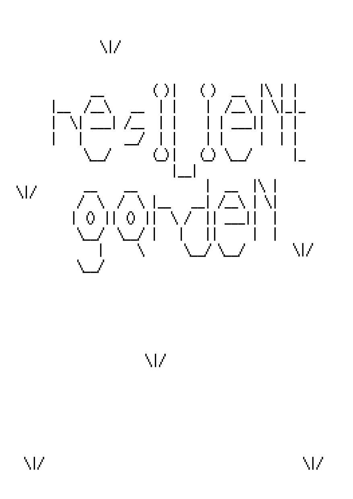
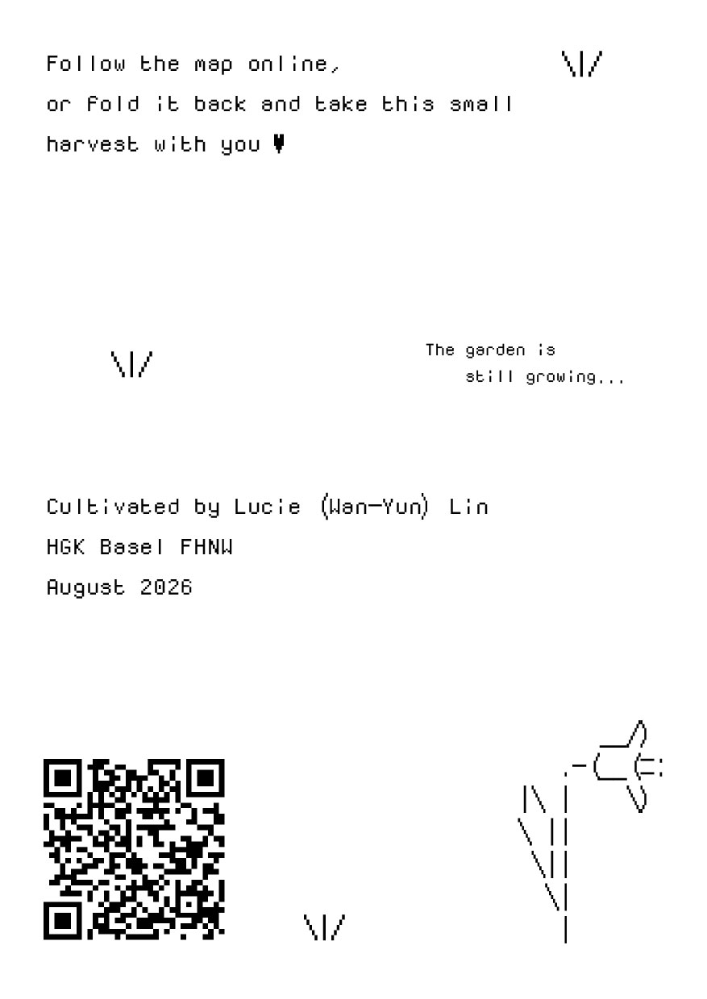
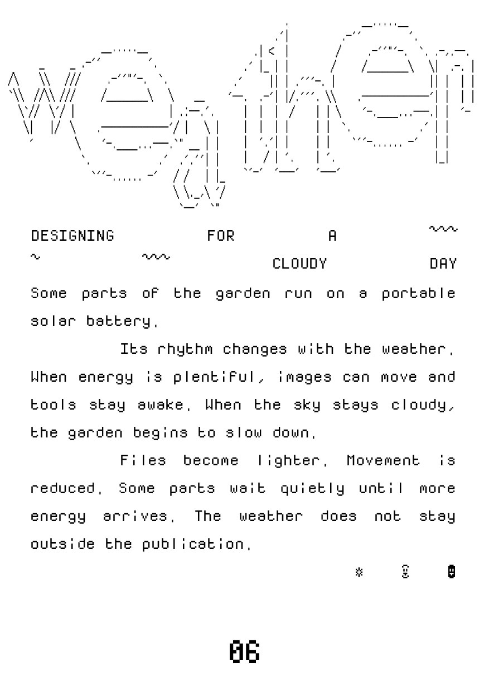
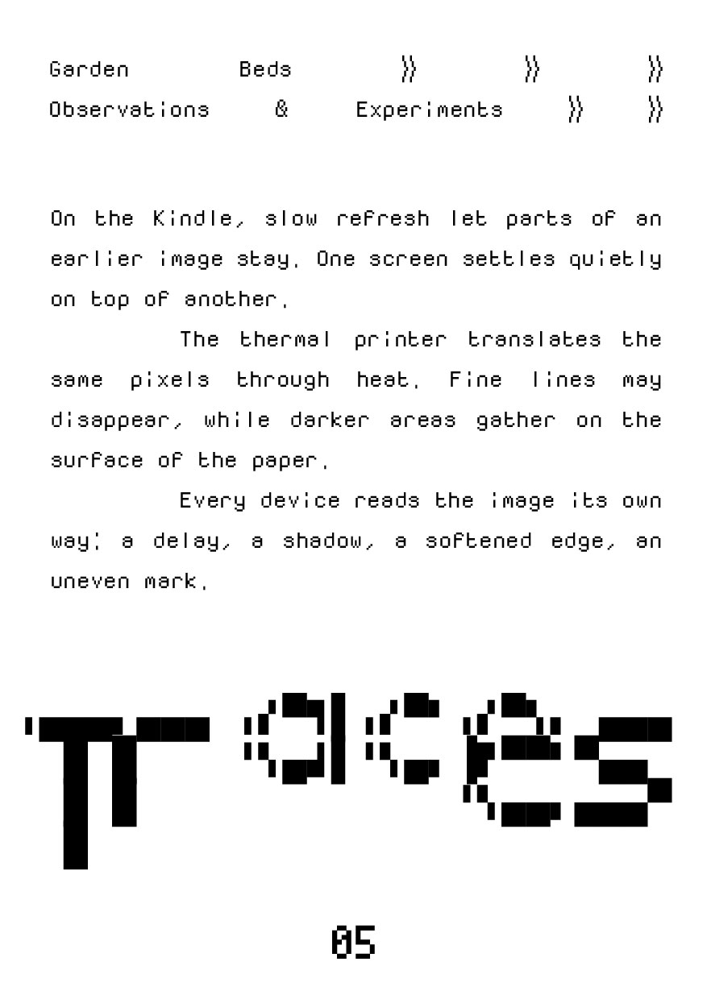
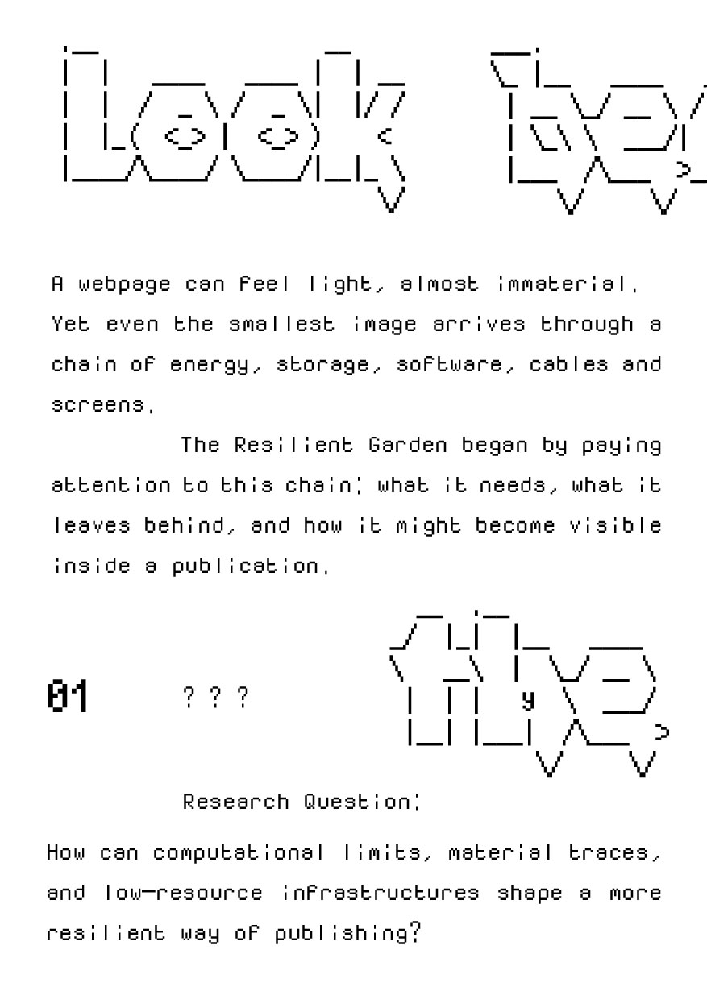
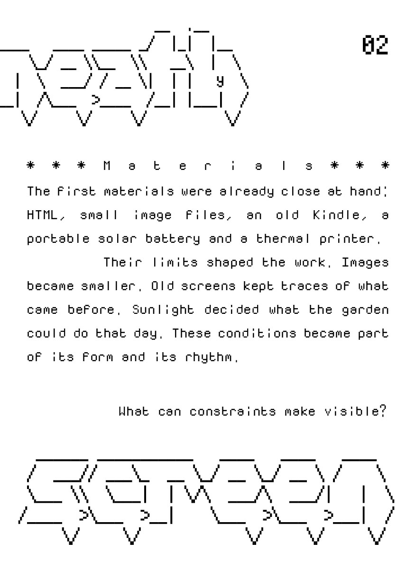
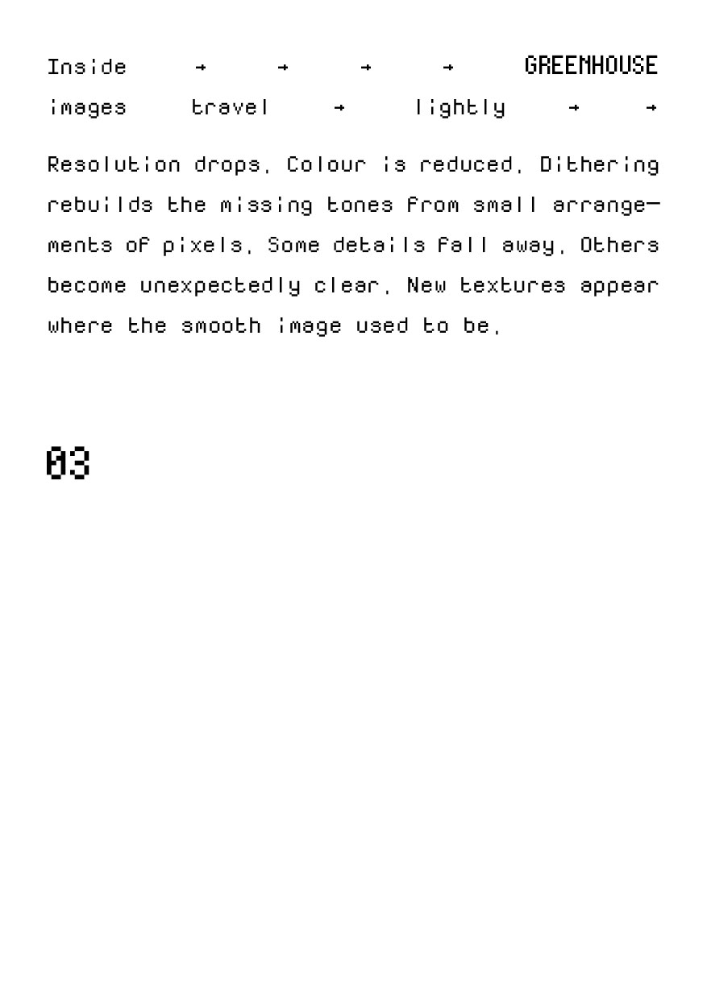

Pressed Edition
COPY NO.01 / 09.08.2026
A4 · 2 sides · print at 100% · margins: none · background graphics: on
[ PAGE 1 — CONTENT ]

Pressed Edition
COPY NO.01 / 09.08.2026






IMAGE DATA
[ PAGE 2 — GARDEN MAP ]
The Garden Map loads here from the live Garden Map page. This needs JavaScript; if it stays empty, open the Garden Map once in this browser, then reload this page.